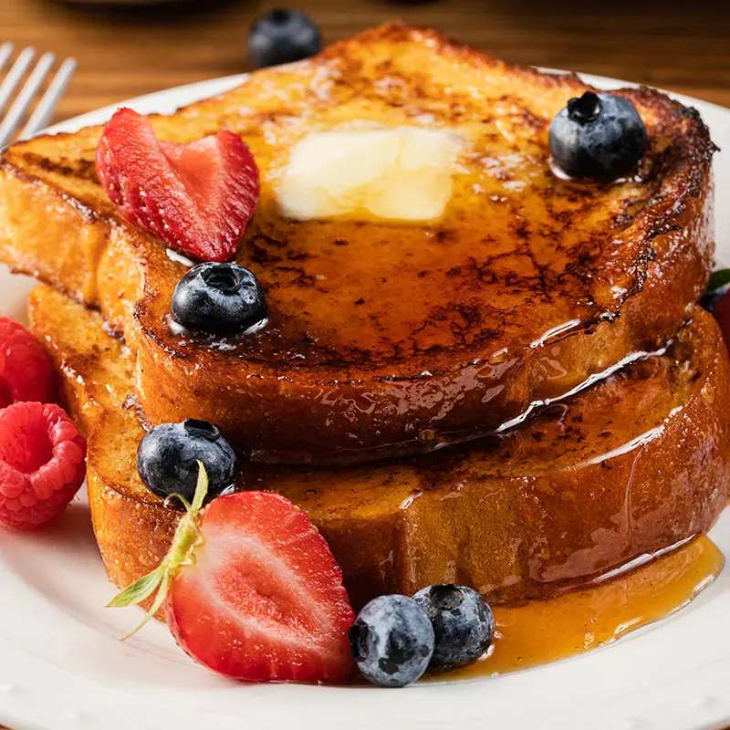

French Toast

Recipe Description
I will make this whenever my girlfriend is not feeling well :)
Ingredients:
- Milk - 1/4 Cup
- Vanilla Extract - 1 Teaspoon
- Cinnamon - 1/2 Teaspoon
- Egg - 1
- Bread Slice - 4
Instructions:
- Whisk the egg, cinnamon, and vanilla extract in a shallow dish
- Stir in milk
- Soak both sides of the bread slice in mixture
- In a greased pan at medium heat, place the bread and let cook for 3 minutes on each side